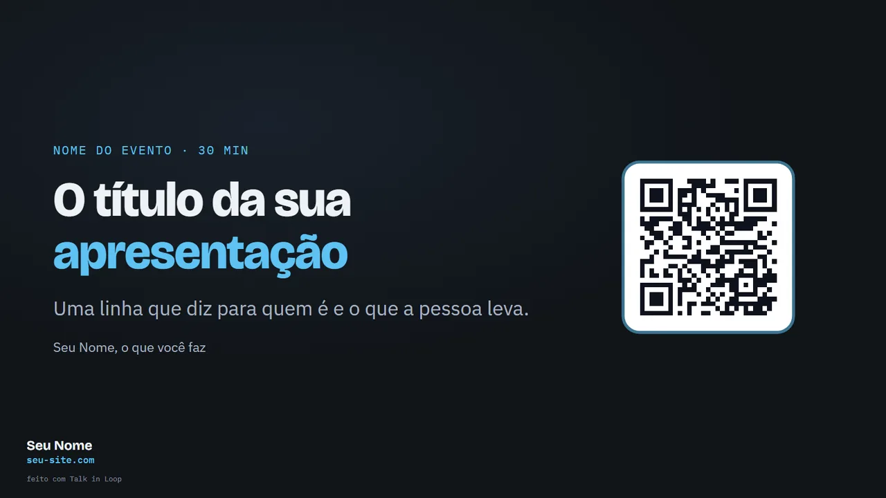
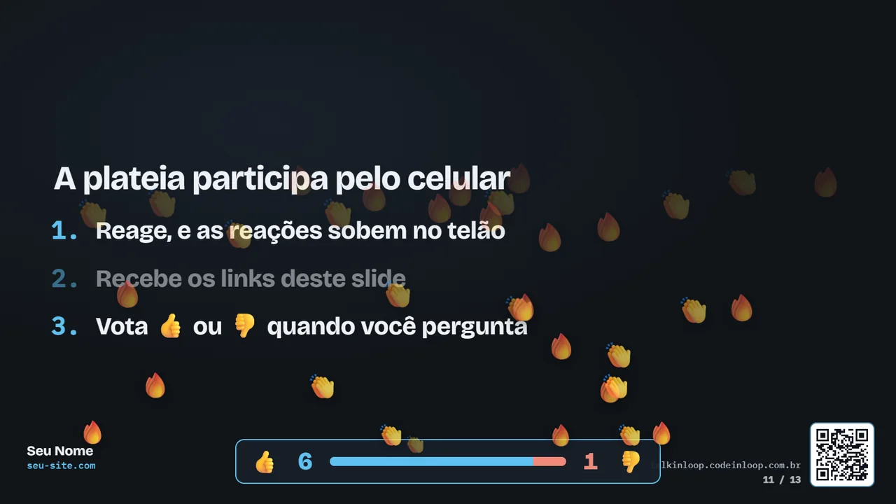
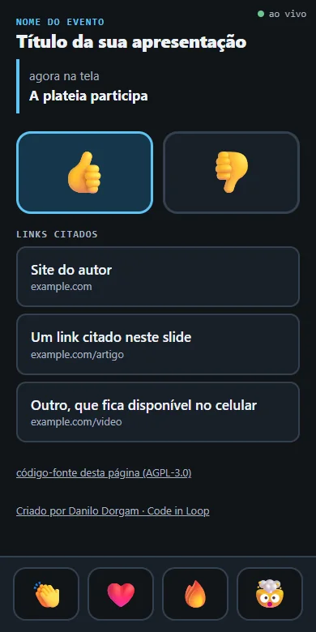
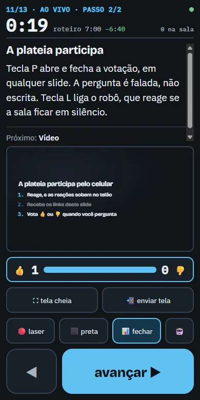

Slides de código aberto para quem palestra
A plateia entra na palestra pelo celular.
Quem assiste escaneia o QR do slide, reage, vota e recebe os links que você cita, em tempo real. Você passa os slides pelo celular, com o roteiro e o cronômetro na mão.
Grátis e de código aberto. Sem conta para você, sem cadastro para a plateia. Só precisa de Docker.

Título da sua apresentação
Toque numa reação aqui embaixo e olhe para o telão.
Isto é uma demonstração: aqui só você reage. Na palestra, é a sala inteira, e o servidor junta tudo em lotes para o telão não travar.
O celular já está na mão da plateia.
Hoje ele compete com você. Aqui ele vira parte da palestra.
- “Alguma pergunta?” e a sala em silêncio.
- A sala responde 👍 ou 👎 em segundos.Você pergunta em voz alta, em qualquer slide, e o placar aparece no telão.
- Gente fotografando o slide para pegar um link.
- O link chega no celular de quem assiste.Aparece quando você chega no slide e fica lá até o fim da palestra.
- Você não sabe se a sala está com você.
- As reações sobem no telão na hora.Depois, as métricas mostram quais slides mais mexeram com a sala e quais links foram abertos.
- Uma ferramenta de enquete em outra aba.
- A interação mora dentro do próprio deck.Não tem aba para trocar, conta para criar nem plano para assinar.
Três telas, cada pessoa com a sua.
Estas são capturas do produto rodando, sem montagem.



Do clone ao palco em três passos.
Você precisa de Git e Docker. Não precisa de conta em lugar nenhum, nem de domínio.
- Clone e subaEle sobe o servidor com os slides dentro e abre um túnel gratuito do Cloudflare.
- Abra o link do palcoNo notebook ligado ao projetor. O QR da plateia aparece nos slides sozinho.
- Aponte o celular para o terminalO QR impresso ali abre o passador. Quem tem esse link comanda os slides.
O que sobe é a apresentação inicial, com um slide para cada recurso. Para a sua, npm run new -- minha-palestra copia essa base, ou um agente de código migra o seu PowerPoint. O passo a passo está no README.
O que vem junto.
- Reações no telão
- Você escolhe os emojis. Um robô opcional bate palma quando a sala fica em silêncio.
- Votação em qualquer slide
- Você pergunta em voz alta, a sala responde 👍 ou 👎, um voto por celular.
- Links por slide
- Cada fonte que você cita aparece no celular da plateia na hora, e fica lá até o fim.
- A tela no celular
- Para quem está longe do telão: o slide atual vai para o celular, com zoom.
- Passador com ponteiro
- Arraste o dedo na prévia e um laser, ou um holofote, aparece no telão.
- Métricas depois
- Pico de gente, reações por slide, votos e cliques em cada link. Sem guardar dado pessoal.
- Tema sem tocar em CSS
- Cores e fontes num arquivo de configuração, com tema claro e escuro.
- Traga a sua apresentação
- Uma skill para agentes de código migra PowerPoint, Google Slides e Keynote, com as notas do apresentador.
- Slides em React
- Blocos prontos para listas, cartões, etapas, números, código e vídeo. Exporta em PDF.
- Português e inglês
- A interface da plateia e do passador segue o idioma da apresentação.
Antes de subir no palco.
Preciso refazer os meus slides?
Não do zero. O repositório traz uma skill para agentes de código que migra PowerPoint, Google Slides, Keynote, PDF, reveal.js e Markdown, com as notas do apresentador. Ela reescreve o conteúdo nos blocos daqui; não copia o layout antigo caixa por caixa.
Preciso saber React?
Os slides são um arquivo TSX, mas você monta com blocos prontos: listas, cartões, etapas, números, código e vídeo. Cores e fontes ficam num arquivo de configuração. Se preferir, um agente de código escreve os slides a partir do seu roteiro.
E se a internet do evento cair?
Você segue apresentando. Os slides e os vídeos saem do seu notebook, em localhost; só a plateia fica sem reagir até a rede voltar. O hotspot do celular serve de plano B.
Aguenta uma sala grande?
O túnel rápido do Cloudflare aceita 200 requisições ao mesmo tempo e troca de endereço a cada subida. Para sala grande ou endereço fixo, o mesmo comando aceita um túnel nomeado, com o seu domínio. Neste vídeo eu explico como o túnel funciona.
Alguém da plateia consegue mexer nos meus slides?
Não. A página da plateia só reage, vota e abre links. Passar slide, abrir votação e ver as métricas exigem o link com token, que só aparece no seu terminal. Por isso, deixe o terminal fora do telão.
A plateia precisa instalar ou se cadastrar?
Não. É uma página web que abre pelo QR. Nenhum dado pessoal é guardado: o voto único usa um id aleatório salvo no navegador, e o IP não é registrado.
Quanto custa?
Nada. O código é AGPL-3.0 e roda no seu notebook. Os seus slides são seus, com a licença que você quiser.
Na próxima palestra, a sala participa.
Três comandos. A primeira subida demora mais, enquanto o Docker monta a imagem.